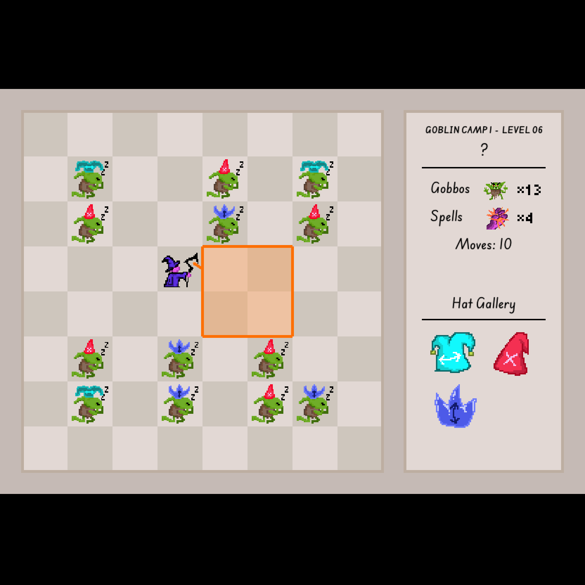

Gobbo Slayor
Jun 2025 - Mar 2026
Sokoban-like (?) puzzle game. Collaborative project with my siblings Terri and Thalia.
Developed and Illustrated by me, designed and puzzleset together.
You must clear all goblins, but each hit changes the shape and position of your aiming.
It was awesome to see how complex we could make the levels, while not expanding the simple ruleset.
Kinda Baba Is You-like if you ask me.
Demoed at ⁂ Socratica Symposium 2026!